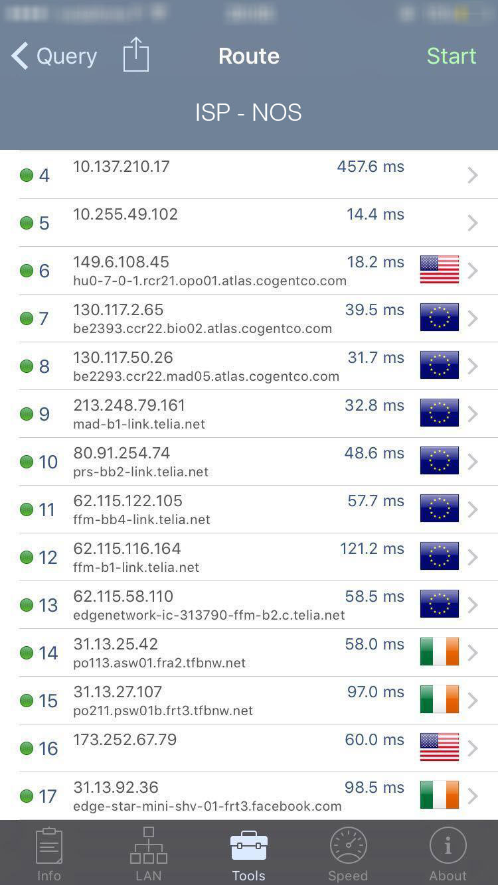
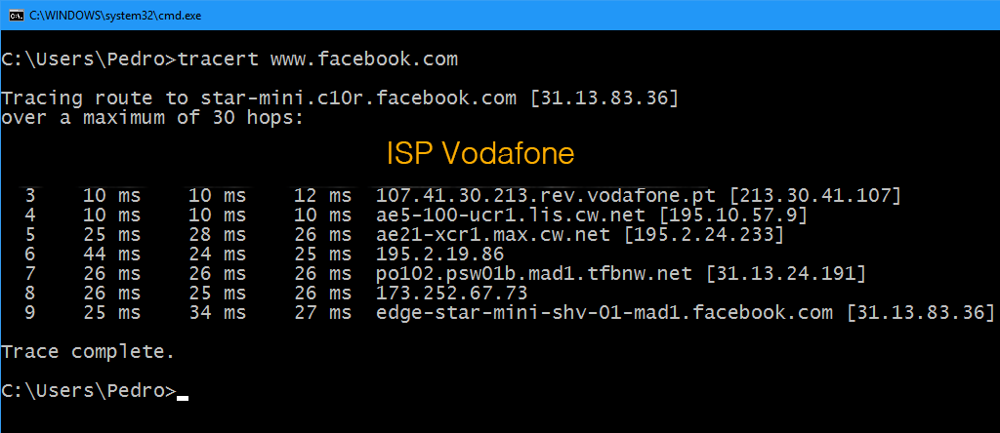
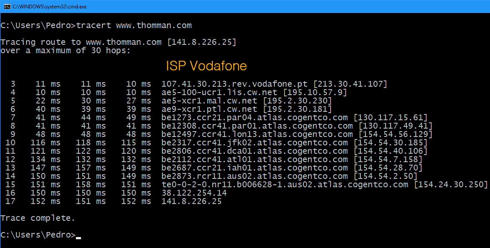
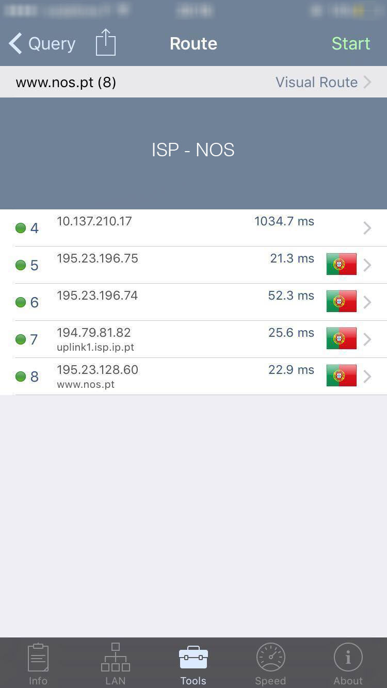
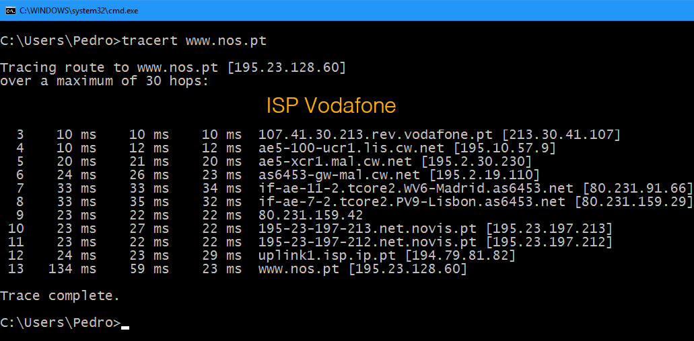
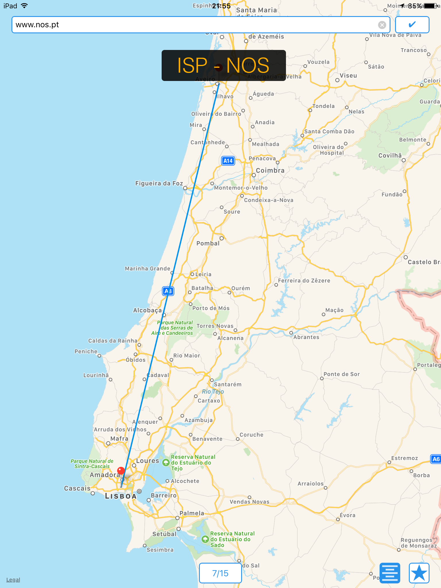

Google.com
O tráfego entre Aveiro e os servidores que alojam o website www.google.com flui diretamente pelo Atlântico, nomeadamente por um dos cabos transatlânticos existentes.
Temos portanto uma ligação de certa forma privilegiada, especialmente considerando que em ambos os operadores o número de "saltos" não foi superior a 6 desde o momento que o tráfego saiu da rede local de origem.
O tráfego proveniente do ISP Vodafone foi roteado por menos equipamentos até chegar ao destino. De notar que, uma vez que o destino era o mesmo nas duas situações, o tráfego foi roteado no final para o mesmo endereço 216.58.210.132
Facebook.com
O teste feito com destino a www.facebook.com evidencia diferenças entre ISP's. O tráfego originado no ISP Vodafone percorre um menor numero de routers até chegar ao seu destino.
A ligação ao Facebook por parte do ISP Vodafone em Portugal é mais privilegiada do que a ligação utilizada pelo ISP NOS. Com os dados obtidos podemos pelo menos concluir que a ligação originada no ISP Vodafone foi efetuada mais rapidamente do que a outra.
A diferença evidente entre os resultados obtidos deve-se ao facto de o tráfego originado no ISP Vodafone ter sido redirecionado para um servidor em Espanha enquanto o tráfego originado no ISP NOS ter sido redirecionado para a Irlanda, demorando mais tempo e "saltando" entre mais routers.
* O resultado acima é influenciado pelo balanceamento de carga utilizado por www.facebook.com.
 Thomman.com
A ligação com destino a www.thomman.com é feita, em parte, por routers localizados nos Estados Unidos da América. Seria de esperar que o tráfego com destino a uma cidade europeia fosse rotado por terra, nomeadamente pela Europa, até atingir o seu destino. No entanto as diferentes métricas utilizadas para selecionar os caminhos entre os routers na Internet não são apenas velocidade mas sim: latência, carga, largura de banda, distância e custo e inclusive contratos entre operadores de todo o mundo.
Em termos de custo, ambas as rotas apresentam grande igualdadem sendo que latência da ligação originada no ISP NOS é superior.

NOS.pt
A escolha de um servidor da NOS como destino permitia verificar se a hipótese de que o tráfego com origem na NOS chegaria mais rapidamente ao destino seria plausível.
Parte da rota usada pela Vodafone para chegar ao servidor www.nos.pt seguiu por território espanhol enquanto o tráfego originado no ISP NOS nunca deixa a rede de domínio da própria operadora, chegando de forma mais eficiente e rápida ao destino.
As relações entre os operadores não são as ideais em termos de eficiência e de custo. Em termos práticos seria de esperar que o tráfego fluísse por território português e tal não se verificou quando este teve origem no ISP Vodafone.
  UA.pt
O ponto de encontro das rotas com origem nos diferentes operadores é no Backbone da FCCN no Porto, local onde o tráfego é roteado no sentido Vodafone -> UA e NOS -> UA, não sendo necessariamente um ponto de roteamento entre os ISP's.
O tráfego originado no ISP NOS mostra uma latência superior em relação à Vodafone.
Talvez o ponto mais interessante da utilização de um servidor localizado em Aveiro, cidade da qual partiu todo tráfego gerado nos ISP's Vodafone PT e NOS PT, seja o tráfego ser "forçado" a "saltar" entre routers geograficamente distantes, como é o caso do routers com o endereço de IP 193.137.0.14, que fica localizado em Lisboa.